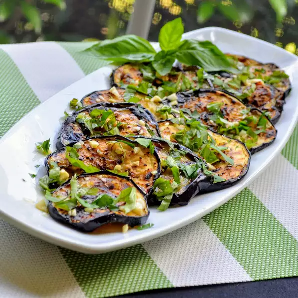

Italian Grilled Egg-Plant with Basil and Parsley

Description
This side dish (or "contorno" if you want to use the Italian word) couldn't be easier! This is a type of dish best cookedin summer when there is abudance of basil and parsley growing in the garden. Works well with zucchini, too.
Ingredients
- 1 eggplant, sliced into 1/2 inch rounds
- 1/3 cup virgin plive oil
- 2 cloves garlic, minced
- 1/8 teaspoon salt
- 2 tablespoo of freshly chopped Basil
- 1 tablespoon chopped fresh flat -leaf parsley
Steps
-
Preheat an outdoor grill for medium-high heat and lightly oil the grate.
-
Brush eggplant lightly with olive oil on both sides. Stir together remaining olive oil, garlic, and salt in a small bowl.
-
Arrange eggplant slices on the preheated grill and cook, turning occasionally, until tender and browned, 3 to 4 minutes per side.
-
Arrange grilled eggplant on a platter. Brush with olive oil and garlic mixture until eggplant has absorbed oil. Sprinkle with chopped basil and parsley and serve.